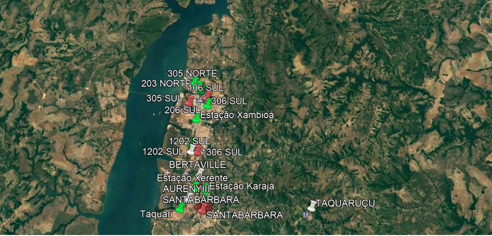

Tendo em vista que a cidade de Palmas oferece uma grande quantidade de eventos para seus moradores, muitos deles utilizam o transporte público para locomover-se, o algoritmo descrito no artigo tem capacidade de criar melhores rotas para atender tais eventos com agilidade e facilidade ao público alvo. Um exemplo seria o festival gastronômico de Taquaruçu ele ocorre todo ano contendo várias atrações, atraindo a presença de milhares de pessoas tornando a locomoção difícil. O algoritmo pode-se definir pontos fixos com uma rota (expressa) aumentou consideravelmente a velocidade de chegada ao destino, atendendo com melhor qualidade os seus usuários.
Pontos Base para aplicação do sistema(Versão Beta 1.0)
 (Grafo Gerado).>Definição Destindo